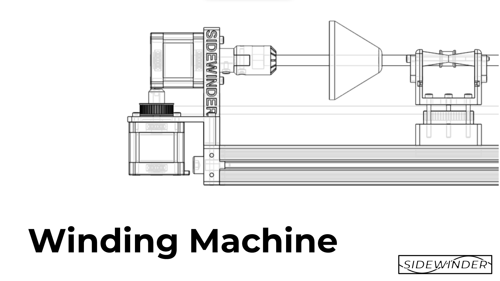
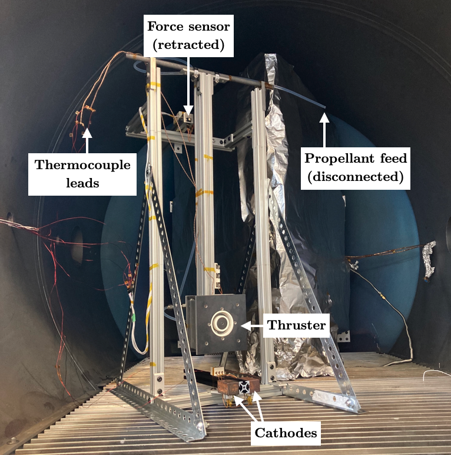
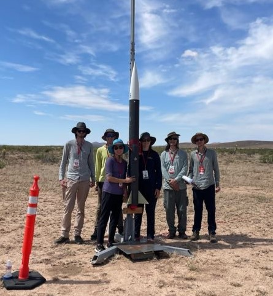
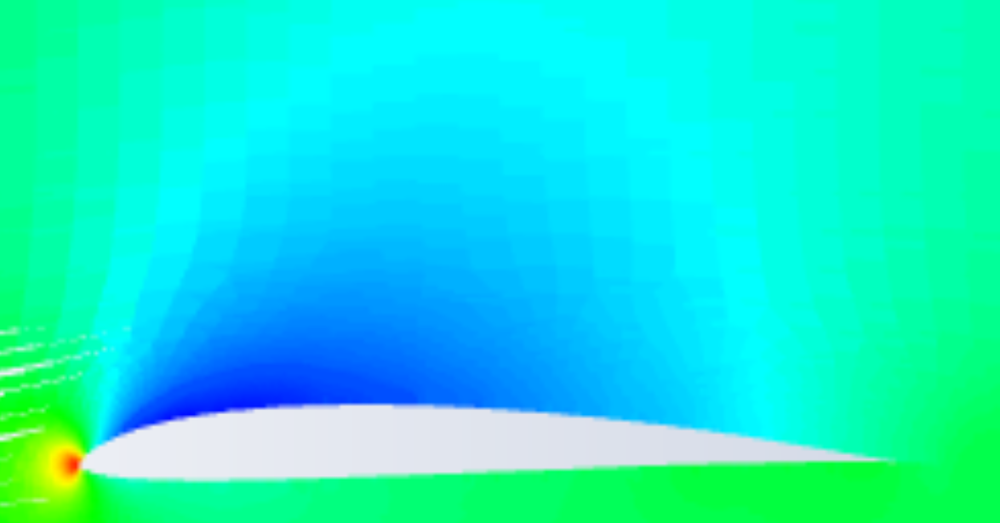
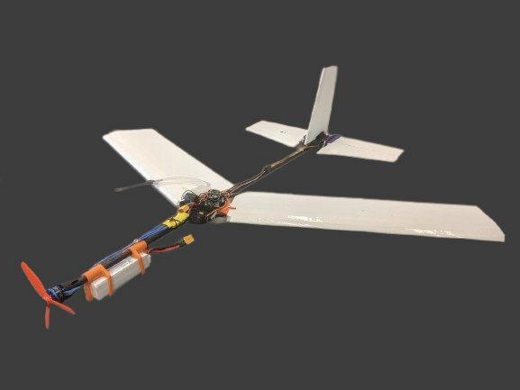
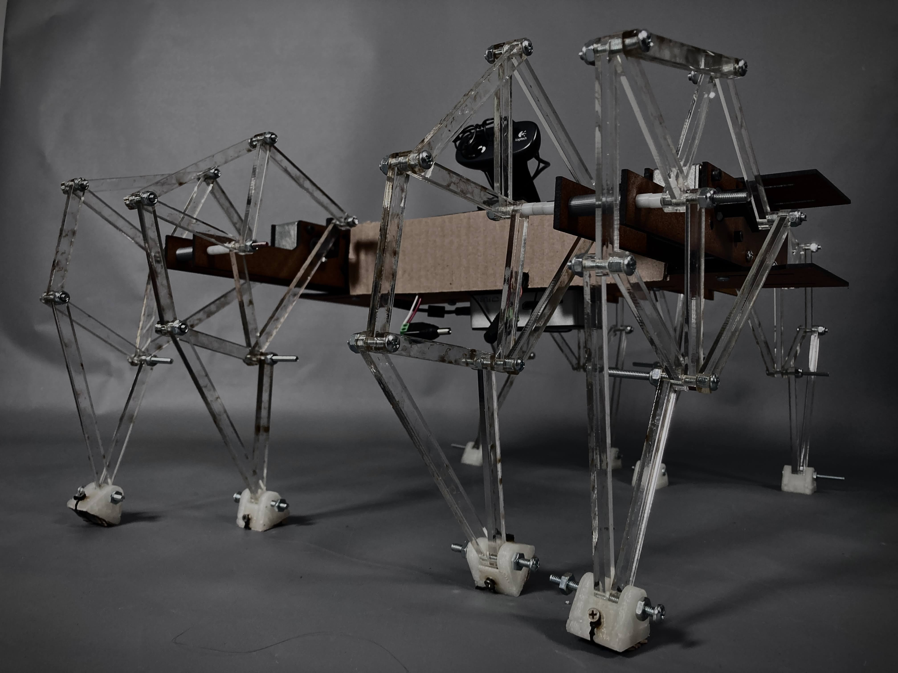

Sidewinder

Sidewinder is a student built, low cost, Carbon fiber filament winder, originally made to manufacture Composite tubes to measure the relationship between the winding angle of a carbon fiber (CF) tube and the flexural load it can support. After the success of our first prototype, Olin Rocketry requested we continue development so that we can create custom CF tubes for use on a high powered model rocket. This project is still in development.
For more information see:
Undergraduate Hall Effect Thruster

This was an undergraduate, cross-institutional project to design, build, and test a Hall effect thruster. My role was to design and build a low cost test stand capable of accurately measuring the low output force of the thruster in a vacuum. The results were presented at the 2022 International Electric Propulsion Conference in Boston MA.
Olin Rocketry

Olin Rocketry is a small project team developing rockets to compete in the Intercollegiate Rocket Engineering Competition (IREC), a competition where teams from around the world design and build high powered model rockets to reach a target altitude of 10,000 or 30,000 ft. In my second year on the team I was the recovery sub-team lead, developing a pneumatic release system; following I became payload lead, developing a 3U CubeSat that could exit the rocket during descent.
CFD tutorial

When I was first learning CFD I found the tutorials were not first time user friendly; To try to help future students I wrote a tutorial with another student to explain the basic math behind 2d airfoils and walk the reader though using Fluent for CDF simulation. This tutorial is designed to be easily added to the current Transport phenomena class for students who are interested in delving deeper.
Since writing last year I have had 2 students find the tutorial useful.
SparrowHawk

SparrowHawk is an ongoing project to build a drone with variable sweep wings. The goal is to create a drone that will dynamically adjust the wing position in flight to optimize efficiency during different stages of flight. If successful this will allow for longer flight times, and a multipurpose drone with good high and low speed flight characteristics.

Beest

Beest is a walking robot inspired by Theo Jansen's Strandbeest sculpture. The goal of the project was to create small-scale Strandbeest powered by electric motors with a fun, slightly creepy character that can identify a person and follow them using computer vision. My role was to design and build the legs based on Jansen's Linkage, and create a unidirectional-high-friction foot for optimized walking on smooth surfaces.